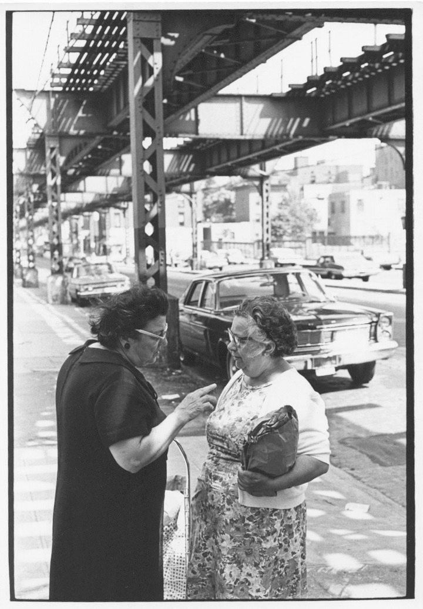

Wonderful photo by William Gale Gedney of two women talking on the sidewalk, mid-to-late 1960s. Real New York. Although the info is scant, I imagine this shot was taken in Gedney’s neighborhood when he lived in Brooklyn in the late 60s and was able to photograph the elevated tracks outside his Myrtle Avenue window. I’d expect this shot to be somewhere nearby. Link to the Gedney collection at the Duke University Libraries website posted yesterday